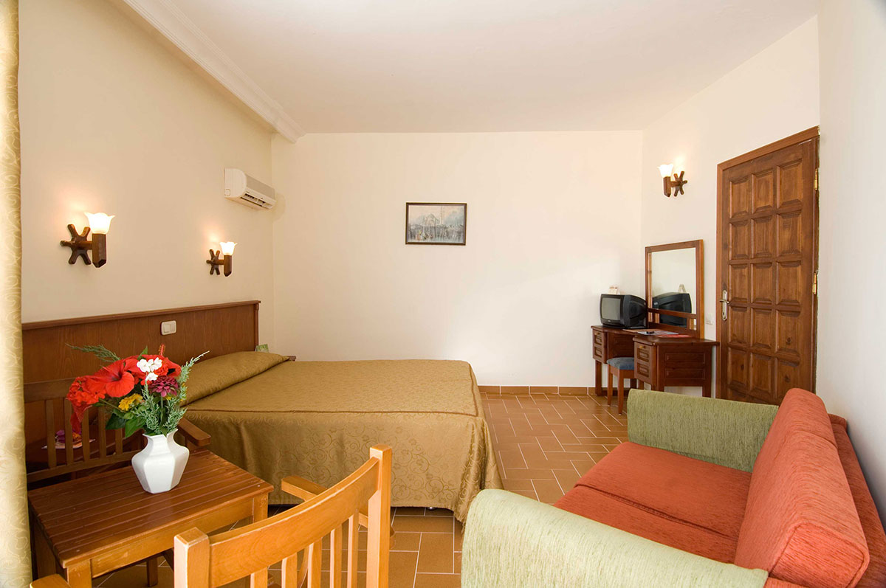

"Nem számít, hová vezet ez az út,
Nem kell félni, ha egy kicsit bonyolult.
Minden állomás valamitől más,
Ettől olyan szép az utazás."
Nászajándékotok nem más, mint egy felejthetetlen utazás.
A dátumot már tudjátok és azt is, hogy útlevél kell hozzá.
Ez egyetlen kérdés csak az, hogy hová?
Kitaláltátok már, hogy hová?
Hmmm, szerintünk kell még egy kis segítség.

Most már aztán tudnotok kell.
De ha mégsem, akkor segítünk: